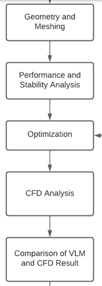
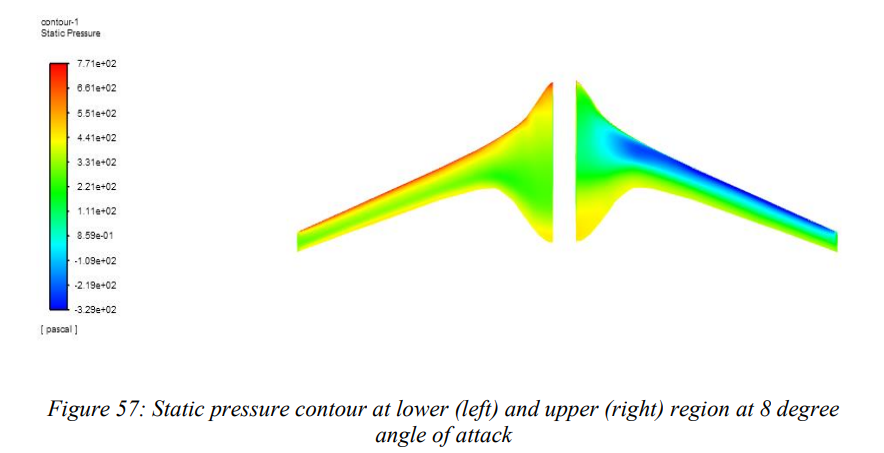

Research Methodology
- Low-fidelity aerodynamic analysis performed using XFLR5 and OpenVSP.
- Initial gradient-based optimization using SU2 yielded incremental improvements.
- Non-gradient optimization using Aeolus was performed for better global solutions.
- High-fidelity CFD simulations conducted using ANSYS ICEM and Fluent.
- Final comparison was done between baseline and optimized models.

Research Results
- 6% increase in lift-to-drag ratio using gradient-based optimization (SU2).
- 23% increase using non-gradient optimization via Aeolus.
- Manual modifications based on expert input led to an additional 3% improvement.
- High-fidelity CFD validated these gains with improved aerodynamic performance and reduced drag profiles.
